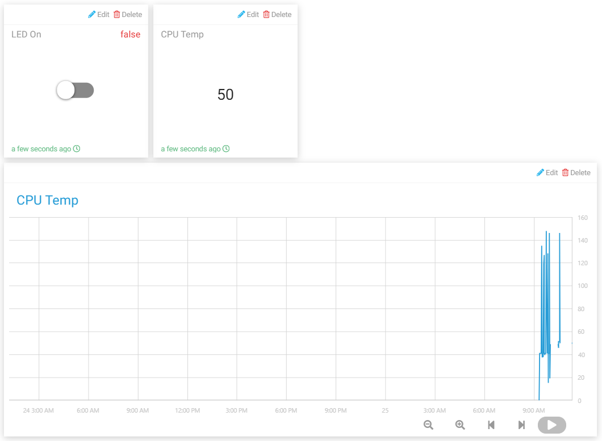

Note
Hello, welcome to the SunFounder Raspberry Pi & Arduino & ESP32 Enthusiasts Community on Facebook! Dive deeper into Raspberry Pi, Arduino, and ESP32 with fellow enthusiasts.
Why Join?
Expert Support: Solve post-sale issues and technical challenges with help from our community and team.
Learn & Share: Exchange tips and tutorials to enhance your skills.
Exclusive Previews: Get early access to new product announcements and sneak peeks.
Special Discounts: Enjoy exclusive discounts on our newest products.
Festive Promotions and Giveaways: Take part in giveaways and holiday promotions.
👉 Ready to explore and create with us? Click [here] and join today!
Smart Curtain
In this project, we will simulate a scenario where the curtains are automatically opened or closed according to the brightness of the room. When the photoresistor detects that the room brightness is too bright, Raspberry Pi will drive the motor to close the curtain; when the room brightness is too dark, the curtain will be opened.
Also you can view the indoor brightness change through text widget on Cloud4RPi, or control the lamp with Switch widget (for electricity safety, this experiment uses LED instead).
Experimental Procedures
Build the circuit.

Open the code.
cd ~/cloud4rpi-raspberrypi-python
sudo nano smart_curtain.py
Find the line below and fill in the correct device token.
DEVICE_TOKEN = '__YOUR_DEVICE_TOKEN__'
Run the code.
sudo python3 smart_curtain.py
Go to Cloud4RPi, add a new control panel named project4 and add 3 widgets (Switch, Text and Chart widgets) via the Add Widget button.
Once added, you can use the Switch widget to control the LED; the value of the photoresistor on the Text widget will be updated every 1 minute, when the value > 100, the motor rotates clockwise for 5 seconds; if the value is less than 20, the motor rotates counterclockwise for 5 seconds. You can see the change over time in the Chart widget.
Code Explanation
def getValue():
analogVal = ADC0834.getResult()
if analogVal > 100:
move.clockwise()
sleep(5)
move.stop()
elif analogVal < 20:
move.contrarotate()
sleep(5)
move.stop()
return analogVal
Read the value of channel CH0 (with photoresistor connected) of the ADC0834. If the value is >100, the motor rotates clockwise for 5 seconds. If the value is less than 20, the motor rotates counterclockwise for 5 seconds.
'CPU Temp': {
'type': 'numeric',
'bind': getValue
},
Pass getValue() into the 'bind' key as a callback function, so that the brightness value (the return value of the getValue() function) can be sent to the Text widget.